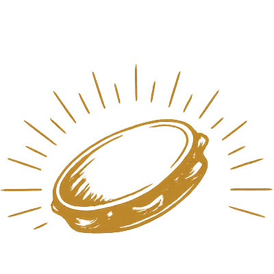

PRESSIONE QUALQUER TECLA
O SAMBA
É A NOSSA HISTÓRIA
Uma jornada interativa pela memória do samba moderno
Explore décadas, descubra histórias e faça parte dessa construção
PRESSIONE QUALQUER TECLA
Uma jornada interativa pela memória do samba moderno
Explore décadas, descubra histórias e faça parte dessa construção

LINHA DO TEMPO
NAVEGUE PELA HISTÓRIA